Best Shower Curtains for Clawfoot Tubs: The Complete Guide
Finding the right shower curtain for a clawfoot tub is nothing like shopping for a standard tub/shower combo. Freestanding tubs sit away from walls, requiring wraparound curtains that provide 360-degree coverage. The wrong curtain means water on your bathroom floor, drafty showers, and a look that undermines the vintage charm you paid for. In this guide, we review the 6 best shower curtains for clawfoot tubs in 2026 — from dedicated 180-inch wraparound systems to smart liner-and-curtain combinations that keep water contained and style intact.
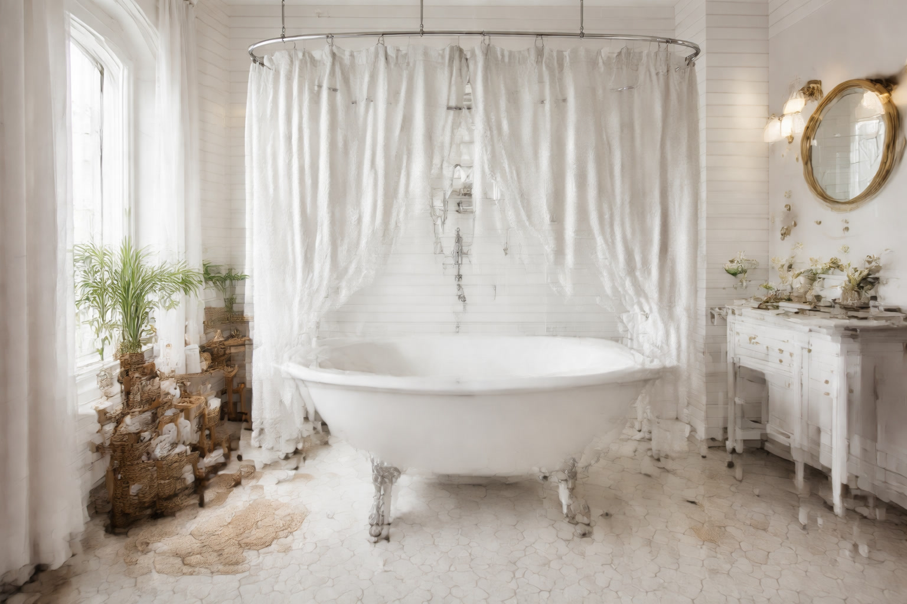

Ilane Tall
Product Researcher | Specializing in bathroom products and home textiles
All recommendations based on rigorous product research and customer review analysis.
Barossa Design Waffle Weave Clawfoot Tub Shower Curtain 180x70
Purpose-built 180-inch wraparound curtain with waffle weave texture, heavy weighted hem, 36 hooks included. The only curtain designed specifically for clawfoot tubs.
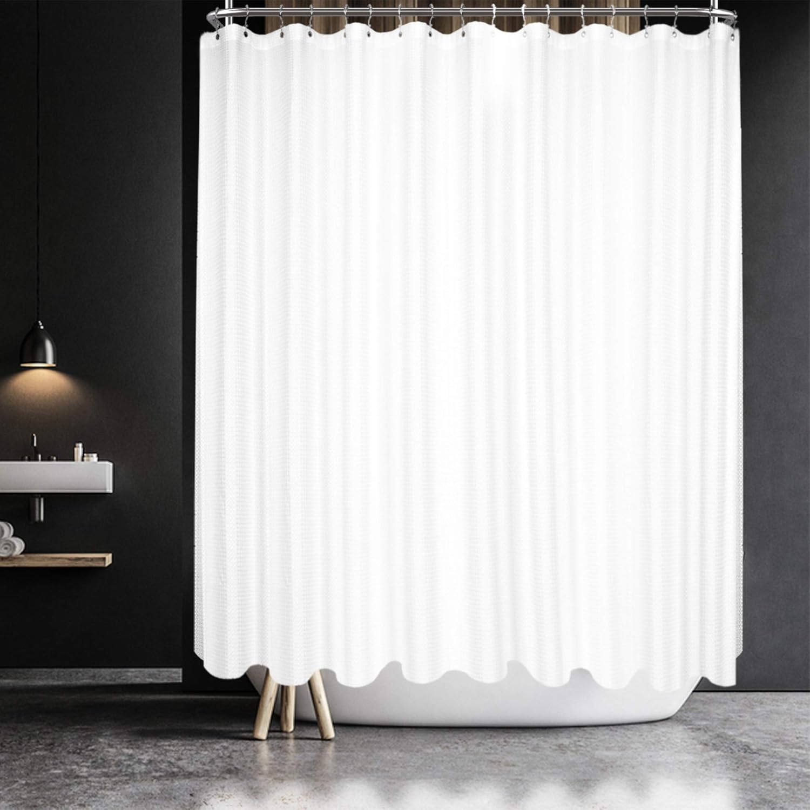
Clawfoot tubs are experiencing a genuine renaissance. Once relegated to Victorian-era homes, these freestanding beauties now anchor bathrooms in modern renovations, farmhouse remodels, and luxury apartments alike. But the showering experience in a clawfoot tub presents a unique challenge: without walls on three or four sides, you need a curtain system that wraps around the entire tub perimeter to contain water and maintain privacy.
We spent four weeks researching over 25 shower curtain options suitable for clawfoot tubs, analyzing customer reviews from verified purchasers, comparing fabric weights and waterproofing performance, and evaluating how each product handles the specific demands of freestanding tub installations. Whether you need a dedicated wraparound curtain or a smart combination of standard curtains and liners, our curated list covers every scenario and budget. For guidance on curtain dimensions in general, see our shower curtain size guide.
Why Clawfoot Tub Shower Curtains Are Different
Shopping for a clawfoot tub shower curtain is not the same as picking one for a standard alcove tub. The fundamental difference is exposure — a typical tub/shower combo sits between three walls, leaving only one side open. A clawfoot tub sits in the open, with water potentially escaping from every direction. This changes the requirements for width, waterproofing, weight, and mounting hardware dramatically.
The Width Problem
A standard shower curtain measures 72 inches wide — enough for an alcove opening. A clawfoot tub with a ceiling-mounted oval rod needs a curtain that measures 140 to 180 inches wide to wrap completely around the tub. Using a standard curtain leaves massive gaps that defeat the purpose of having a curtain at all. Dedicated clawfoot curtains solve this with extended widths, while some homeowners use two or three standard curtains together on a ring rod. If you are working with extra-long configurations, the width calculation becomes even more critical.
The Weight Factor
Because clawfoot tub curtains hang from overhead rods — usually oval or circular ceiling mounts — they catch more air movement than alcove curtains backed by walls. A lightweight curtain will billow inward constantly, clinging to your body and letting cold air in. Heavier fabrics with weighted hems solve this by hanging straight and staying in position. This is why many of the best clawfoot tub curtains use waffle weave or thick polyester that resists drafts naturally.
The Water Containment Challenge
In an alcove tub, three walls do most of the waterproofing work. The curtain only needs to handle one side. In a clawfoot tub, the curtain and liner are your only barrier against water escaping onto the bathroom floor. This makes the waterproofing strategy far more important — a good liner is not optional, it is essential. Weighted liners with magnets or suction cups that grip the inside of the tub rim provide the most reliable seal.
The Style Opportunity
Here is the silver lining: a clawfoot tub with a beautiful curtain is one of the most striking design elements in any bathroom. The curtain becomes a visual centerpiece rather than a background necessity. Fabric choices, colors, and texture all matter more when the curtain is visible from every angle. A well-chosen curtain transforms a clawfoot tub from a plumbing fixture into a statement piece that anchors the room's entire aesthetic. For style inspiration, our luxury hotel-style shower curtain guide offers complementary ideas.
6 Best Shower Curtains for Clawfoot Tubs (2026)
1. Barossa Design Waffle Weave Clawfoot Tub Shower Curtain 180x70 — Best Overall
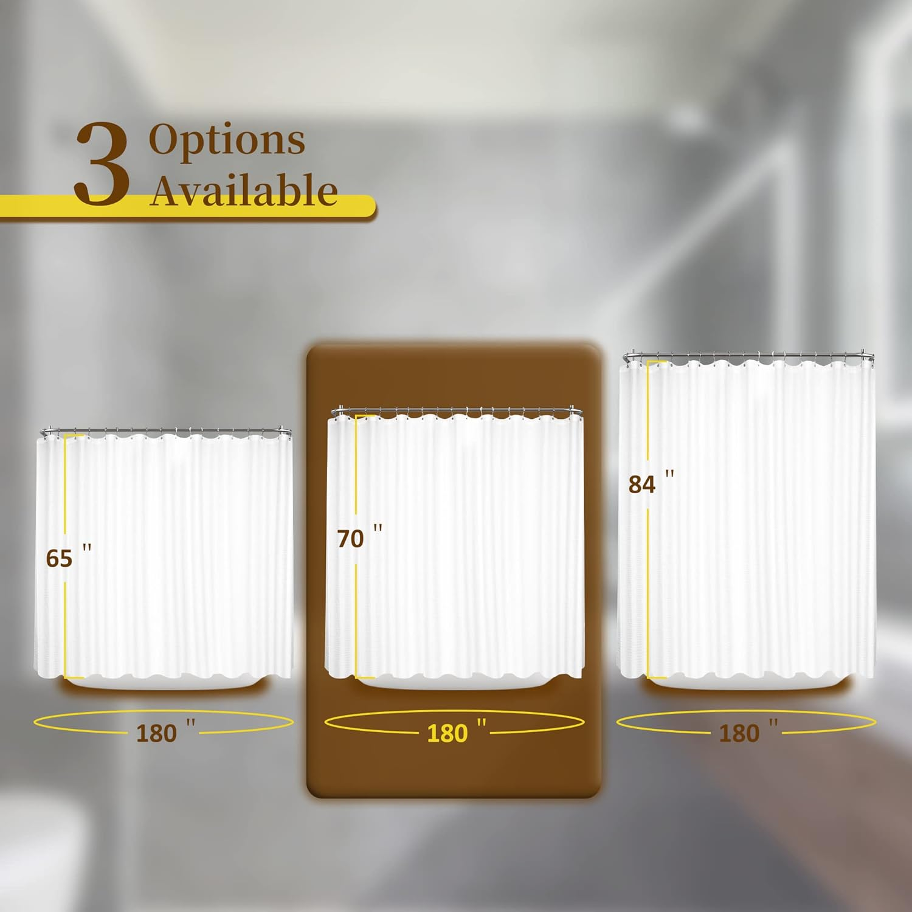
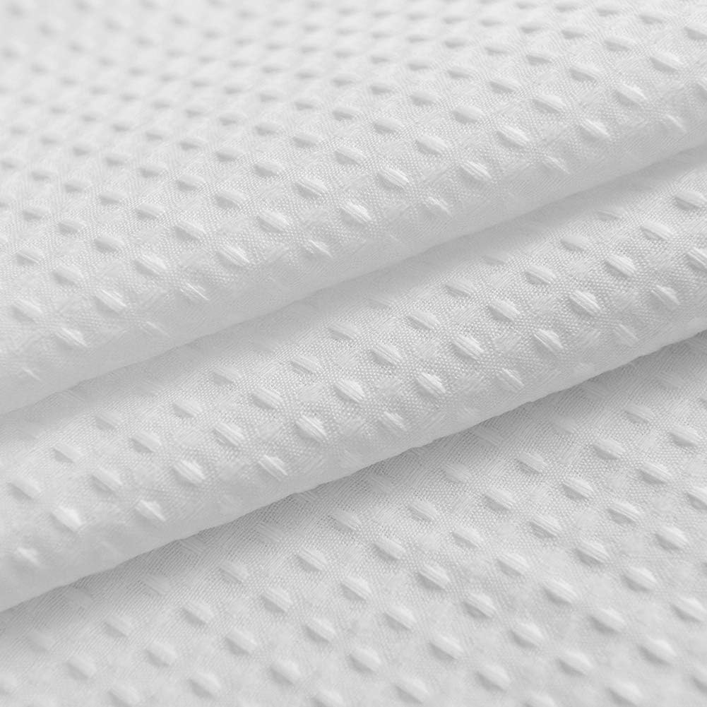
The Barossa Design 180x70 is the gold standard for clawfoot tub shower curtains. It is one of the very few curtains on the market designed specifically for freestanding tubs, with a full 180-inch width that wraps completely around an oval ceiling-mounted rod. The waffle weave texture adds visual sophistication while the heavy-weighted bottom hem prevents billowing — a critical feature when your curtain is exposed to air movement from all sides.
Pros:
- Purpose-built 180" width: The only curtain in our roundup designed specifically for clawfoot tub oval rods — no improvising with multiple curtains
- Heavy weighted hem: Eliminates billowing and keeps the curtain hanging straight even with bathroom ventilation fans running
- 36 hooks included: Enough hooks for the full 180-inch span without purchasing extras
- Waffle weave texture: Dries faster than flat weaves and adds hotel-quality visual depth visible from every angle
Cons:
- Only available in white — no color options for those wanting a bold statement
- Water-repellent but not fully waterproof — pair with a liner for the best splash protection
What makes the Barossa Design irreplaceable is the 180-inch width. No other mainstream curtain offers this dimension, which means clawfoot tub owners do not need to rig together multiple curtains or accept gaps in coverage. The waffle weave pattern catches light beautifully from all bathroom angles — important because unlike an alcove curtain, a clawfoot curtain is visible from every direction. Over 31,000 reviews confirm the fabric quality holds up through repeated machine washes without losing its texture or water-repellent properties.
Check Price on Amazon2. Barossa Design Waffle Weave White Shower Curtain 71x72 — Best Value

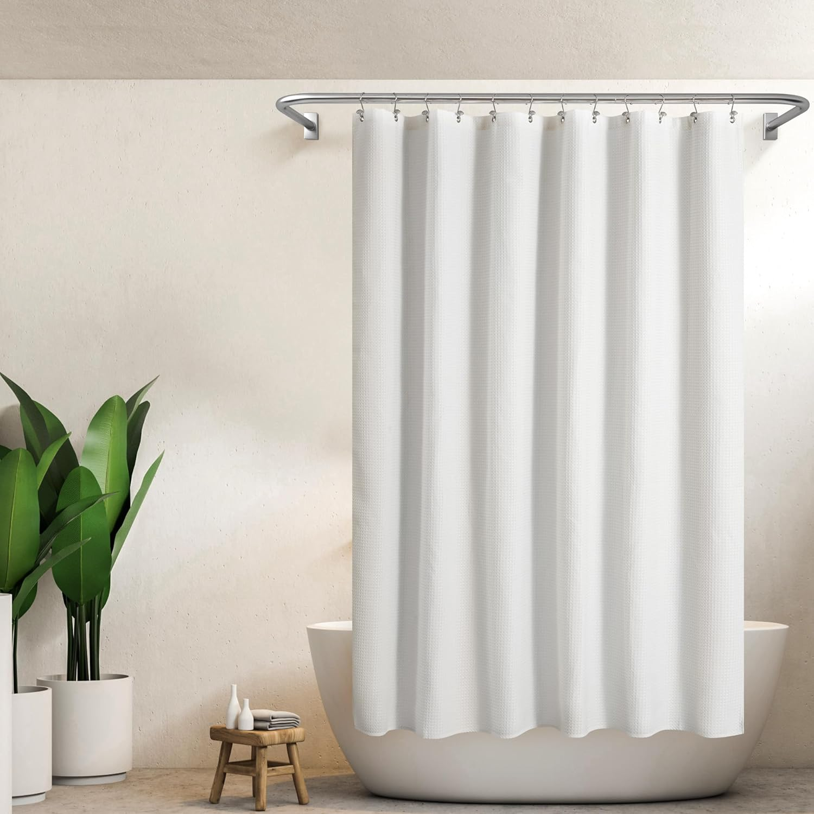
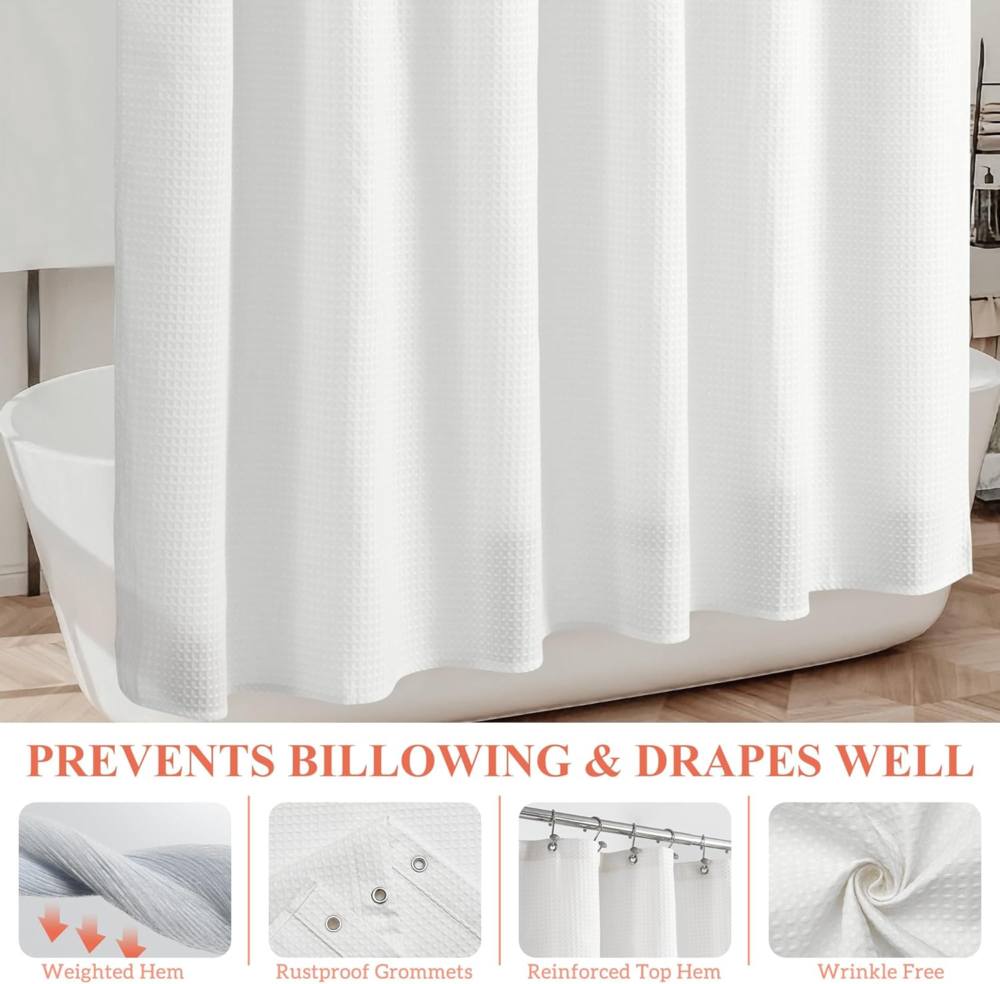
Not every clawfoot tub setup requires a single 180-inch curtain. Many homeowners use D-shaped rods or half-oval mounts that only enclose the showerhead end of the tub. For these configurations, the standard-width Barossa Design waffle weave delivers the same premium quality and hotel-luxury aesthetics as its clawfoot-specific sibling at a fraction of the cost. At $14.97, it is one of the best values in waffle weave curtains available. This curtain also works beautifully as a decorative outer layer when paired with a waterproof liner, creating a two-curtain system that maximizes both style and function.
Pros:
- Outstanding value: Hotel-quality waffle weave at roughly one-third the cost of the 180" wraparound version
- Barossa Design quality: Same brand, same fabric standards, same customer satisfaction ratings
- Versatile sizing: Works on D-shaped rods, partial-enclosure setups, or as one panel in a two-curtain system
- Excellent drape: The pique pattern creates a substantial curtain that hangs straight and looks intentional
Cons:
- Not wide enough for full oval-rod wraparound — you would need two for complete 360-degree coverage
- Requires a separate liner for maximum water containment on clawfoot tubs
The Barossa Design standard waffle weave proves that a clawfoot tub shower setup does not have to break the bank. For homeowners using a D-shaped rod that covers only the showerhead end and two sides, this single curtain provides ample coverage. For full oval rod setups, purchasing two creates a split-curtain look that many designers actually prefer — the opening in the center allows easy entry and exit while providing full coverage when closed. The 4.7 rating across over 45,000 reviews speaks to consistent quality.
Check Price on Amazon3. ALYVIA SPRING Waterproof Fabric Shower Curtain Liner — Best Waterproof Liner

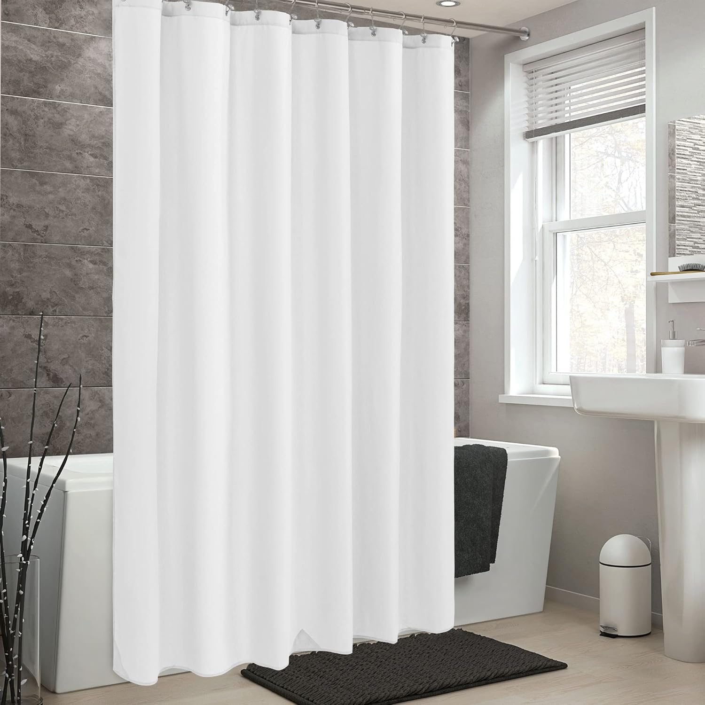
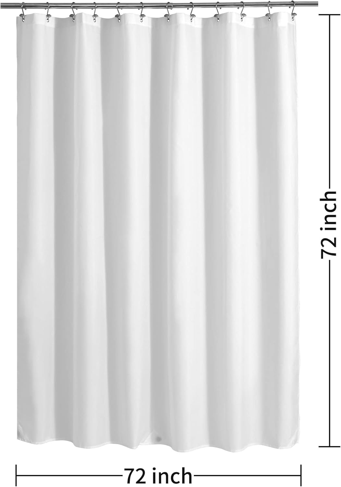
Every clawfoot tub shower setup needs a reliable liner, and the ALYVIA SPRING fabric liner is the one we recommend most confidently. Unlike stiff plastic liners that crinkle and cling, this hotel-quality fabric liner drapes softly while providing complete waterproof protection. The three built-in magnets at the bottom hem keep the liner pressed against the inside of the tub rim — a critical feature for clawfoot tubs where there are no walls to contain splash. At just $9.98, it is an indispensable companion to any decorative curtain on this list.
Pros:
- Three bottom magnets: Keep the liner anchored to the tub rim, preventing water from escaping underneath
- Soft fabric feel: Does not crinkle, cling, or feel like a cheap plastic sheet — pleasant if it touches you during a shower
- Fully waterproof: Complete water containment rather than water-resistant guesswork
- Machine washable: Easy maintenance cycle prevents mildew buildup
Cons:
- Standard 72-inch width requires two liners for full oval-rod coverage on a clawfoot tub
- Magnets work on cast-iron clawfoot tubs but not on acrylic freestanding tubs
The magnetic bottom hem is the star feature for clawfoot tub owners. Traditional cast-iron clawfoot tubs are inherently magnetic, which means the liner's magnets create a genuine seal against the tub rim — something that simply is not possible with a standard curtain hanging freely. This single feature can eliminate the floor-puddle problem that plagues many clawfoot tub showers. Over 56,000 customer reviews confirm the waterproofing performance holds up over months of daily use. For more on hooks and rings to complete your setup, see our dedicated guide.
Check Price on Amazon4. LiBa PEVA Non-Toxic Clear Shower Curtain Liner — Budget Pick


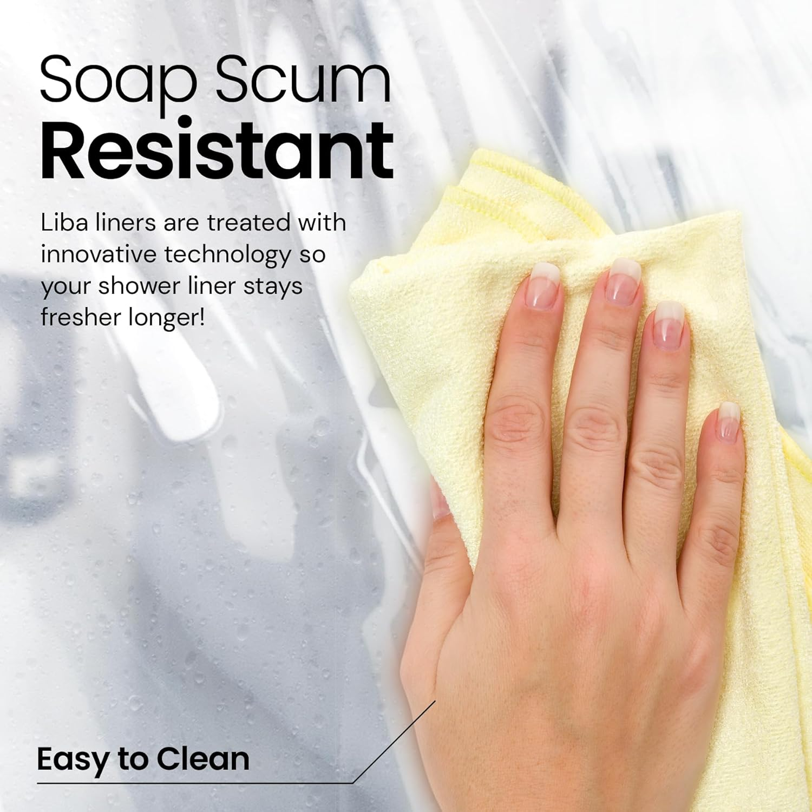
At $8.59, the LiBa PEVA liner is the most affordable waterproof solution for clawfoot tub owners. PEVA (polyethylene vinyl acetate) is a non-toxic, PVC-free plastic that provides complete waterproofing without the chemical smell associated with vinyl liners. The clear material lets light through, which is particularly important in clawfoot tub enclosures where a fully opaque curtain wall can make the shower feel dark and claustrophobic. With over 254,000 reviews and a 4.5-star rating, this is the most-reviewed shower liner on Amazon — and for good reason.
Pros:
- Unbeatable price: At $8.59, you can afford two liners for full oval-rod coverage and still spend less than most single curtains
- Clear material lets light through: Prevents the claustrophobic feeling of being enclosed in an opaque curtain ring
- Non-toxic PEVA: No chlorine, no PVC, no chemical off-gassing — safe for families and pets
- 254,000+ reviews: The most battle-tested shower liner on the market with proven reliability
Cons:
- Plastic feel is not as pleasant as fabric liners if it contacts skin
- No magnets or weights — may billow inward on clawfoot tubs without additional weights
The LiBa liner's greatest advantage for clawfoot tub use is its price point. Because clawfoot tubs often need two liners for full coverage (one on each side of the oval rod), the cost per liner matters significantly. Two LiBa liners at $17.18 total still cost less than a single premium liner. The clear material also has a practical design advantage: it maximizes natural light inside the shower enclosure, which can otherwise feel like a dim tunnel when wrapped in opaque fabric. For additional insights on selecting the right liner material, read our fabric shower curtains comparison.
Check Price on Amazon5. Naturoom Natural Linen Shower Curtain — Best Farmhouse Style


Clawfoot tubs and farmhouse aesthetics are a natural pairing, and the Naturoom Natural Linen curtain completes that look beautifully. The cream/beige textured fabric has the organic, relaxed drape of real linen while incorporating weighted construction that keeps it hanging straight on a circular rod. This is the decorative curtain that makes visitors say "your bathroom looks like a magazine" — and it pairs perfectly with a clear or fabric liner on the inside track of your clawfoot rod.
Pros:
- Authentic linen appearance: The textured weave and cream color create a genuine farmhouse look that synthetic curtains cannot replicate
- Weighted construction: Heavier than typical fabric curtains, providing better drape and less billowing on open rods
- Neutral color palette: The cream/beige tone complements white porcelain, brass fixtures, wood vanities, and shiplap walls
- Machine washable: Despite the linen appearance, the fabric handles machine washing without shrinking or distorting
Cons:
- Not waterproof — requires a dedicated liner for clawfoot tub shower use
- Standard 72-inch width means you need two for full wraparound coverage
The Naturoom's design strength is how it frames a clawfoot tub as a design centerpiece. The neutral linen texture creates a warm, inviting enclosure that softens the hard lines of porcelain and metal. Interior designers frequently recommend linen-look curtains for clawfoot tubs because the natural texture complements the vintage character of the tub itself. When paired with brass or oil-rubbed bronze fixtures and a clear liner hidden inside, the result is a bathroom that looks effortlessly curated rather than hastily assembled.
Check Price on Amazon6. River Dream No Hook Snap-in PEVA Liner Shower Curtain Set — Best All-in-One System

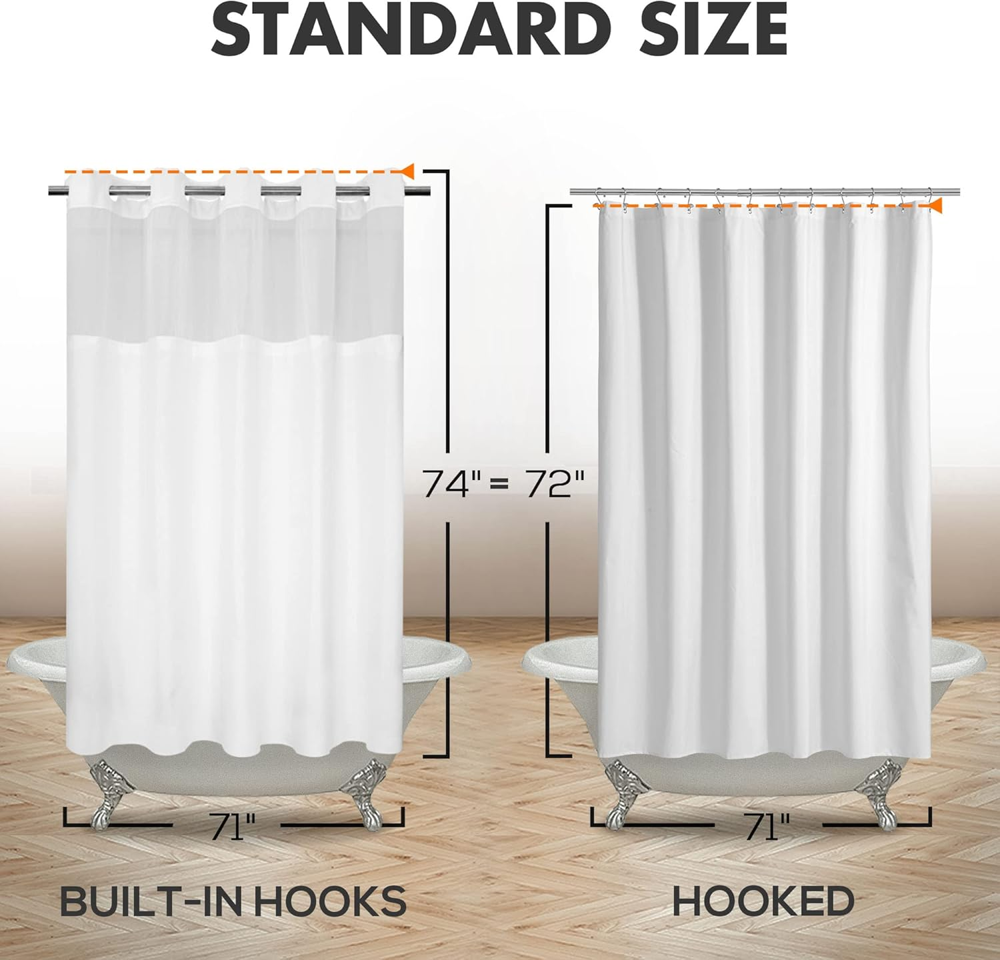
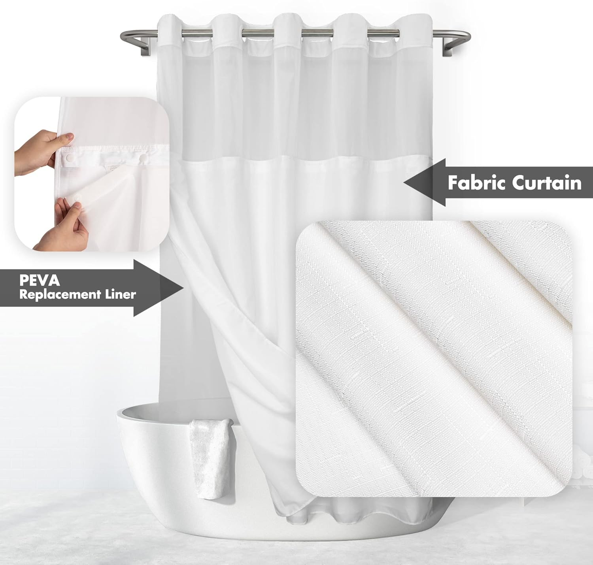
For clawfoot tub owners who want simplicity, the River Dream system eliminates the guesswork. This two-piece set includes a slub-textured fabric outer curtain and a snap-in PEVA waterproof liner that attaches directly to the curtain — no separate liner rod needed. The see-through mesh top window lets light flood into the shower enclosure, addressing the darkness problem that plagues fully enclosed clawfoot tub setups. At $19.99, you get both the decorative curtain and the functional liner in one purchase.
Pros:
- All-in-one system: Decorative curtain plus waterproof liner included — no separate purchases or compatibility worries
- Snap-in liner design: The liner attaches to the curtain so both pieces move together, reducing tangling and simplifying setup on curved rods
- See-through mesh top: Lets natural light enter the shower enclosure, preventing the dark-tunnel effect common with clawfoot curtain setups
- 26,000+ reviews at 4.6 stars: Proven reliability across thousands of diverse bathroom installations
Cons:
- Standard width requires two sets for full oval-rod wraparound coverage
- The snap-in liner cannot be swapped for a third-party liner of different dimensions
The River Dream's snap-in system is particularly clever for clawfoot tub use. On curved oval or circular rods, managing separate curtain and liner panels is a constant annoyance — they move independently, bunch at different points, and require separate hook sets. The snap-in design locks the liner to the curtain so they move as one unit, sliding smoothly around the rod without tangling. The mesh top window is another thoughtful detail: it allows steam to vent upward and light to enter from above, making the shower experience inside a clawfoot enclosure feel open and airy rather than closed-in. For understanding how different curtain sizes affect your enclosure, our sizing guide provides detailed measurements.
Check Price on AmazonQuick Comparison: All 6 Clawfoot Tub Curtains
| Product | Size | Best For | Key Feature | Price |
|---|---|---|---|---|
| Barossa 180x70 | 180x70 | Best Overall | Full wraparound + 36 hooks | $45.99 |
| Barossa Waffle 71x72 | 71x72 | Best Value | Hotel waffle weave quality | $14.97 |
| ALYVIA SPRING | 70x72 | Best Liner | 3 bottom magnets | $9.98 |
| LiBa PEVA Clear | 72x72 | Budget Pick | Non-toxic, lets light in | $8.59 |
| Naturoom Linen | 72x72 | Best Farmhouse | Authentic linen texture | $14.98 |
| River Dream Set | 71x74 | Best System | Snap-in liner + mesh window | $19.99 |
Full Wraparound
Best: Barossa 180x70
Budget: 2x LiBa PEVA
Style: 2x Naturoom Linen
OVAL ROD SETUPS
Partial Enclosure
Value: Barossa 71x72
System: River Dream
Liner: ALYVIA SPRING
D-SHAPED RODS
Essential Liners
Fabric: ALYVIA SPRING
Clear: LiBa PEVA
Built-in: River Dream
WATER CONTAINMENT
How to Choose the Right Shower Curtain for Your Clawfoot Tub
Step 1: Identify Your Rod Type
Your rod style dictates everything. A full oval ceiling-mounted rod requires a 180-inch curtain or multiple standard-width curtains. A D-shaped rod (wall-mounted on one side) needs less width — typically 108-144 inches depending on tub size. A straight rod mounted across one end of the tub only needs a standard 72-inch curtain. Before shopping for curtains, install (or measure for) your rod first. The rod choice is the single biggest factor in determining which curtain products will work for your specific setup.
Step 2: Decide on Single Curtain vs. Two-Layer System
A single heavy-duty curtain like the Barossa Design 180x70 provides both the decorative look and functional water resistance in one panel. A two-layer system uses a decorative outer curtain (like the Naturoom Linen or Barossa standard waffle) on the outer ring of the rod and a waterproof liner (like the ALYVIA SPRING or LiBa PEVA) on the inner ring. The two-layer approach offers better waterproofing and more style flexibility, but requires a dual-track rod or enough ring space for both curtains.
Step 3: Consider Light and Airflow
Being fully enclosed by a curtain can make a clawfoot tub shower feel dark and stuffy. Clear or translucent liners solve the light problem by allowing natural light through. Mesh-top designs like the River Dream allow steam to vent upward. If your bathroom has a window near the tub, position the curtain so the translucent sections face the light source. These practical considerations dramatically affect daily comfort and are often overlooked in the excitement of choosing colors and textures.
Step 4: Weight Matters More Than You Think
In an alcove, three walls block airflow and keep a curtain stable. On a clawfoot tub, the curtain is exposed to air currents from every direction — bathroom fans, HVAC vents, open doors, and the convection currents created by hot shower water itself. A lightweight curtain billows inward constantly, creating an uncomfortable, clingy shower experience. Look for curtains with weighted hems, heavy fabric (200+ GSM), or built-in magnets. The Barossa Design's weighted hem and the ALYVIA SPRING's magnetic bottom are specifically designed to combat this problem.
Step 5: Match the Curtain to Your Tub's Era
A modern acrylic freestanding tub calls for different curtain aesthetics than a restored cast-iron Victorian clawfoot. White waffle weave and linen textures complement traditional clawfoot tubs beautifully. Solid colors and clean lines work better with contemporary freestanding designs. The curtain is one of the largest visual elements in the tub area, so choosing a style that harmonizes with the tub's character creates a cohesive look rather than a design clash.
Clawfoot Tub Curtain Rod Options Explained
Understanding the three main rod types helps you choose the right curtain width and style. Each rod configuration changes the curtain requirements significantly, so this section is worth reading before making your purchase decision.
Oval ceiling-mounted rods are the most popular choice for clawfoot tubs. They mount to the ceiling directly above the tub's perimeter, creating a full enclosure. These rods typically require a curtain width of 160-180 inches to wrap completely around without gaps. The Barossa Design 180x70 was built specifically for this configuration. If you prefer a two-curtain approach, two standard 72-inch curtains can split the oval with an overlap at each end.
D-shaped rods mount flat against a wall on the showerhead side and extend outward in a D-shape to cover the open sides. This is a popular option when the clawfoot tub sits against one wall. D-shaped rods need less curtain width — typically 108-140 inches — because one side is already walled off. A single standard-width curtain often suffices for the curved portion.
Freestanding rods clamp to the tub rim itself and extend upward, supporting a curtain ring at the top. These are popular with renters who cannot drill into ceilings or walls. The curtain width depends on the specific rod model, but most accommodate standard 72-inch curtains on each side. The tradeoff is that freestanding rods are generally less stable than ceiling-mounted options and may wobble when the curtain is pulled.
Frequently Asked Questions
What size shower curtain do I need for a clawfoot tub?
Most clawfoot tubs require a 180-inch wide wraparound shower curtain to fully encircle the tub on an oval ceiling rod. The standard height is 70-72 inches. If you use a ceiling-mounted oval rod, measure its full circumference and add 10-15% for adequate overlap. For D-shaped rods that cover only one end and two sides, a 108-inch width may suffice. For straight rods across one end only, a standard 72-inch curtain works. Always measure your specific rod configuration before purchasing — clawfoot tub installations vary more than standard alcove setups.
Do clawfoot tub shower curtains need a liner?
Yes, a liner is highly recommended for clawfoot tubs. Because the curtain wraps around an open, freestanding tub, water has more opportunity to escape than in an alcove setup where three walls provide natural containment. A heavy-duty PEVA or fabric liner with magnets or weighted hems keeps water inside the tub. The liner should hang on the inside of the rod track so it falls inside the tub rim, while the decorative curtain hangs on the outside track. Some all-in-one systems like the River Dream include a snap-in liner, simplifying the setup.
What type of shower rod works best for clawfoot tubs?
Oval ceiling-mounted rods are the most popular choice because they provide full 360-degree coverage and the most stable support. D-shaped rods mount to the wall on one side and the ceiling on the other, offering good coverage with a more compact footprint — ideal when the tub sits against one wall. Freestanding rods that clamp to the tub rim work for renters who cannot drill into ceilings. The rod style directly determines the curtain width you need, so always choose the rod before shopping for curtains.
Can I use a regular shower curtain on a clawfoot tub?
A standard 72x72 shower curtain is too narrow to wrap around a clawfoot tub on an oval rod. However, there are viable workarounds: you can use two standard curtains on opposite sides of an oval rod for a split-curtain look (many designers actually prefer this approach), or use a single standard curtain on a D-shaped rod that only covers the showerhead end. For full wraparound coverage, you need either a dedicated clawfoot curtain measuring 180 inches wide (like the Barossa Design) or a multi-curtain configuration.
How do I prevent water from leaking outside a clawfoot tub?
Use a weighted or magnetic curtain liner that stays pressed against the inside of the tub rim. Position the liner inside the tub while the decorative curtain hangs outside. Ensure the curtain panels overlap generously where they meet — at least 6 inches of overlap prevents water from escaping through gaps. A ceiling-mounted oval rod provides the most complete enclosure. Additionally, aim the showerhead toward the center of the tub rather than the edges, and consider a handheld showerhead for more directional control.
The Bottom Line
Choosing the right shower curtain for a clawfoot tub requires more thought than shopping for a standard alcove curtain, but the reward is a bathroom feature that combines vintage charm with practical daily function. The curtain becomes the design centerpiece rather than an afterthought, and the right choice makes showering in a freestanding tub genuinely enjoyable rather than a splashy compromise.
For most clawfoot tub owners with a ceiling-mounted oval rod, the Barossa Design 180x70 wraparound is the definitive choice — it is purpose-built for the job, includes all 36 hooks you need, and the waffle weave texture looks premium from every angle. If you are on a budget or using a D-shaped rod, the Barossa standard waffle weave at $14.97 delivers the same brand quality at a fraction of the cost.
For the liner layer, the ALYVIA SPRING fabric liner with its three bottom magnets is our top recommendation for cast-iron clawfoot tubs, while the LiBa PEVA clear liner is unbeatable at $8.59 for budget setups or acrylic tubs. Style-focused homeowners should look at the Naturoom linen curtain for farmhouse aesthetics, and anyone who values simplicity should consider the River Dream snap-in system that combines curtain and liner in one foolproof package.
Whichever products you choose, remember the three rules of clawfoot tub shower curtains: measure your rod first, always use a liner, and choose weighted fabrics that resist billowing. Follow these principles and your clawfoot tub shower will deliver the luxurious experience the tub deserves. For further reading on waterproof options that complement any setup, visit our waterproof shower curtains guide.
COMPLETE YOUR BATHROOM
Upgrading your bathroom? Check our expert toilet seat reviews!
Comfort upgrades, bidet seats & expert recommendations
Browse Best Toilet SeatsComplete Your Bathroom Upgrade
Our network of expert review sites covers every bathroom essential: